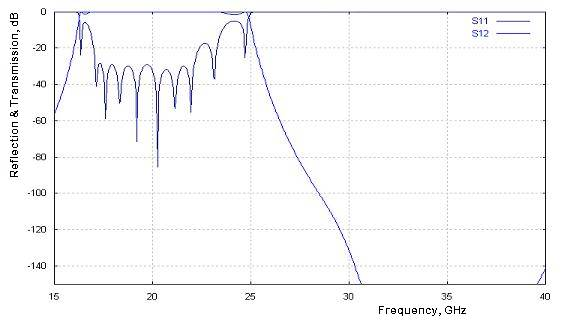
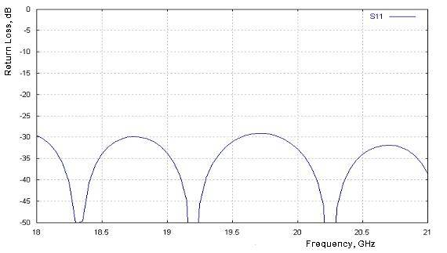
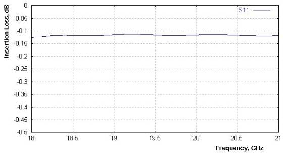
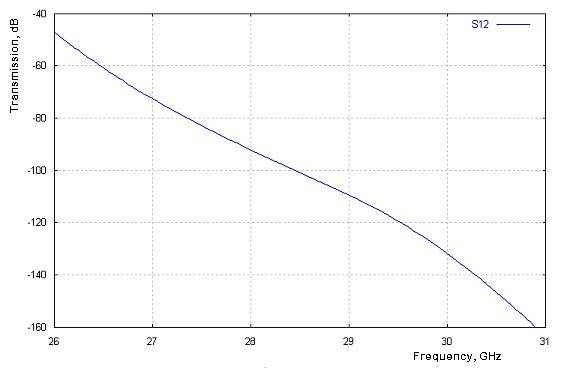
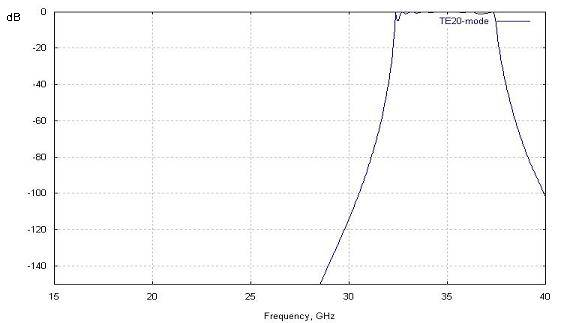
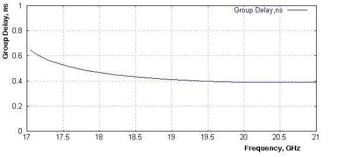
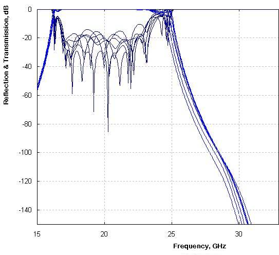
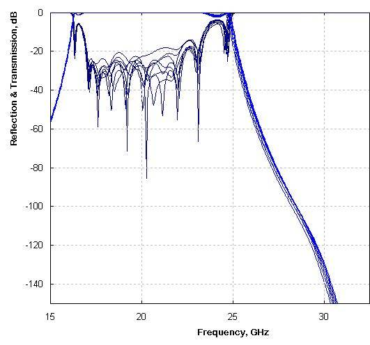
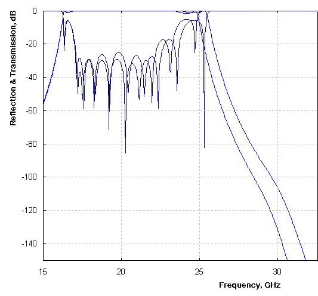
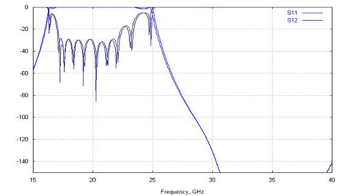

OMT Transmit Reject Filter
1. Design Description
1.1.
Electrical Design
The OMT filter is a low-pass waveguide filter based on E-plane corrugated impedance structure utilizing 14 irises and 13 cavities. Each of irises contributes a reflection zero to the reflection frequency response of filter and each cavity contributes a transmission zero to the transmission frequency response. The reflection zeros form the physical (3dB) pass-band of the filter, which is extended from 16.25 GHz to 24.9 GHz. The transmission zeros form the physical stop-band, which is extended from 28.5 GHz to 42 GHz providing more than 100 dB rejection of the frequency spectrum carried by the dominant waveguide mode of TE10. There is intermediate (roll-off) zone of negative slope of transmission versus frequency response, which is extended from 24.9 GHz to 28.5 GHz. The filter structure shows lack of rejection of frequency spectrum from 31.5 GHz to 38.5 GHz, because of possible propagation of the spurious TE20-mode throughout the filter. The actual rejection of the filter in this frequency band is generally unpredictable, as it depends on external existence of the mode. The filter structure is designed and optimized in respect to electrical parameters required by the specification (see Table 2.1 below) and evaluated over different combinations of tolerances (see Table 4.1).
1.2.
Mechanical Realization
The filter can be assembled from two symmetrical half bodies, which are symmetrical in respect to the central H-plane (the plane of the wider waveguide wall). The two half bodies are to be connected by flanges and fastened by screws. The half bodies are to be made from zinc alloy. Each half body can be machined using milling or EDM technology (see paragraph 3). Silver internal finishing is recommended in order to reduce the dissipation loss.
2. Original Performance
2.1.
Simulation Method
The simulation model represents a plurality of E-plane cavities connected to each other by short waveguide nodes (irises) and connected to external interface by EH-plane steps. Propagation of 36 waveguide modes is taken into account in cavities and the dominant mode is assumed to propagate in the nodes. The S-matrix is computed for each frequency point as cascade of sequence of cavities and steps. The computational method is tested on similar designs and deviation of the data simulated by the method from the results measured or simulated using other methods is found acceptable and predictable in most cases.
2.2.
Original Performance
The simulation method is applied to the filter model and the obtained results are represented as usual electrical parameters in the Table 2.0 bellow. It is assumed that the surface is smooth and not deviated from ideal rectangular.
Table
2.1: Original (not deviated) simulated performance
|
Parameter |
Spec |
Expected Value |
Note |
|
Design
Pass-Band, GHz |
19.7 – 20.2 |
19.7 to 20.2 |
Design pass-band
is wider |
|
Return Loss, dB |
18 (1.3:1) |
29 (1.07:1) |
|
|
Insertion Loss,
dB |
0.5 |
0.14 |
Uncoated zinc
surface |
|
Gain Variation,
dBpp |
N/A |
0.01 |
|
|
Rejection, dB 29.5 – 30.0 GHz |
55 |
80 |
Design stop-band
is wider |
|
Group Delay, ns |
N/A |
0.46 |
Group delay
absolute value |
|
Group Delay
Variation, ns |
N/A |
0.02 |
Relative
variation |
|
Peak Power
Handling, W |
N/A |
40 kW |
Air breakdown at
1 atmosphere |
|
Internal
Dimensions, mm W x H x L |
N/A |
10.7 x 15.7 x
39.5 |
Internal
dimensions |
|
Temperature, dgC |
N/A |
-20 to +80 |
Suggested
operational temperature |
2.3
Pass-Band and Stop-Band
The scattering parameters are computed over frequency range from 15 GHz to 40 GHz with step of 30 MHz and the results are represented as reflection/transmission versus frequency charts (see Figures 2.1 – 2.4).

Figure
2.1: Original transmission and reflection versus frequency response.

Figure
2.2.: Original return loss versus frequency response

Figure
2.3: Insertion loss versus frequency response simulated for zinc surface in
ambient environmental conditions

Figure
2.4: Plot of rejection versus frequency of original model in roll-off zone
2.4. TE20-mode propagation zone
TE20-mode is found to reduce rejection in the frequency band from 31.5 GHz to 38.5 GHz, which is outside of the specified rejection bands. Transmission response plot corresponding to propagation of frequency spectrum carried by TE20-mode is presented in Figure 2.4 in case if the filter is used for other applications.

Figure
2.4: Worst case of transmission of spurious mode of TE20 versus frequency plot.
2.4. Group Delay
Group delay response is computed and represented as X-Y plot below in Figure 2.6.

Figure
2.5: Group delay response
3. Sensitivity Analysis and Evaluation of Deviation of
Performance
3.1.
Computational Errors
As the solution of Maxwell equations does not exist in exact and closed terms for arbitrary boundary conditions, all methods used for prediction of electrical performance of practical wave guiding devices are numerical and approximate. The simulated model is already deviated from the physical model if even they are ideal. In accordance with correlation between simulation and test performed for similar filters, the numerical method used for simulation contributes a computational error making 0.5-0.7% shift of roll-off along the frequency axis with no considerable degradation of reflection response.
3.2.
Random Tolerances Applied by Production Methods
This kind of tolerances is assumed to contribute a random shift of top, bottom and sides of each cavity in respect to their initial positions. It is found that the random tolerances mostly degrade the pass-band reflection response and do not generally affect roll-off unless the width and height of wave guiding channel are changed. The impact on the original frequency response (see Figure 2.1) caused by random tolerances is represented by charts shown on Figures 3.1 and 3.2 simulated for different deviations and combinations.

Figure
3.1: Deviation of original response of filter caused by different random
combinations of +/- 0.05 mm random tolerances

Figure
3.2: Deviation of original response of filter caused by different random
combinations of +/- 0.02 mm random tolerances.
3.3.
Radii Applied by Production Methods
In addition to the random tolerances, rounding of convex cavity corners is expected, if the milling technology is used to fabricate the half bodies. Impact of radii is evaluated and represented as frequency response plot on Figure 3.3.

Figure
3.3: Evaluation of deviation of frequency response caused by 1 mm radii.
3.4.
Draft angle
Draft angle of tapering of cavity makes effect of reduction of equivalent cavity dimensions causing roll-off right shift (see Figure 3.4).

Figure
3.4: Simulated shift of frequency response caused by 3 dg draft angle.
3.5.
Contact Quality
Deviation of frequency response caused by distortion of vertical currents flowing through contact areas is assumed to be negligible, if quality of contact between the half bodies is good.
4. Predicted Filter Performance
In accordance with the results of primary simulation and sensitivity for computational and production errors the expected performance of the presented filter is summarized in the Table 4.1 below.
Table
4.1: Expected performance of OMT filter in respect to three fabrication methods
|
Parameter |
Spec |
Expected Value |
Note |
|
Design
Pass-Band, GHz |
19.7 – 20.2 |
19.7 to 20.2 |
|
|
Return Loss, dB |
17.5 (1.3:1) |
17.5 (1.3:1)* 24 (1.14:1) 29 (1.07:1) |
Milling +/-0.05,
R. 1 mm, 3 dg draft Milling +/-0.02
R. 1 mm, 3 dg draft EDM |
|
Insertion Loss,
dB |
0.5 |
0.22 0.16 0.15 |
Milling +/-0.05,
R. 1 mm, 3 dg draft Milling +/-0.02
R. 1 mm, 3 dg draft EDM |
|
Gain Variation,
dBpp |
N/A |
0.05 0.01 0.01 |
Milling +/-0.05,
R. 1 mm, 3 dg draft Milling +/-0.02
R. 1 mm, 3 dg draft EDM |
|
Rejection, dB 29.5 – 30.0 GHz |
55 |
88 92 118 |
Milling +/-0.05,
R. 1 mm, 3 dg draft Milling +/-0.02
R. 1 mm, 3 dg draft EDM |
|
Group Delay, ns |
N/A |
0.46 |
|
|
Group Delay
Variation, ns |
N/A |
0.02 |
|
|
Peak Power
Handling, W |
N/A |
40 kW |
Air breakdown at
1 atmosphere |
|
Internal
Dimensions, mm W x H x L |
N/A |
10.7 x 15.7 x
39.5 |
|
|
Temperature, dgC |
N/A |
-20 to +80 |
If not specified |
(*) There is no adequate margin, two tuning screws are required.
5. Recommendations
5.1.
Fabrication
EDM or milling with tolerances smaller than +/- 0.02 mm is recommended in order to achieve more than 24 dB return loss (less than 1.14 VSWR) with no tuning or adjustments. Smaller milling tool with radius less than 1 mm is recommended.
5.2.
Tuning
Two tuning screws may be required in order to compensate degradation of performance if tolerances greater than +/- 0.03 are accepted.
5.3.
Finishing
Internal silver coating is recommended in order to reduce dissipation loss in pass-band of filter to 0.07 dB.
5.4.
Contact grooves
Contact grooves are recommended to improve contact between parts.